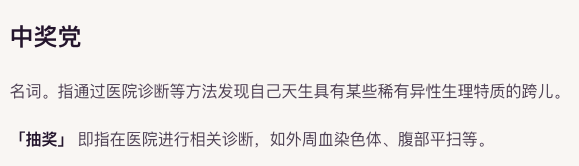

時璃風医詩🌈🏳️🌈
@hagishigure
這個詞本質上還是生理本質主義建構的詞語。事實上XXY並非跨性別，原定的性別是一種社會規訓的產物，它將XXY定義為是「病理性」的。

夏子🏳️⚧️
@Natsumejuri
中奖党这个词真的是药娘亚文化排遗出来的一坨大的，把intersex这种医学与社会双重压迫的问题恶俗化成抽到SSR的雌竞话术。老保不会因为你有先天性性别模糊而尊重你的性别认知，相反，相对于一般跨性别人可以深柜保护自己，间性别人在没有自我认知能力的时期就要被老保社会介入身体扭转。 https://t.co/TQE3MWKn4o